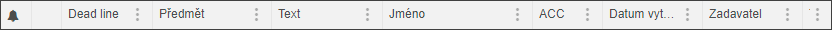
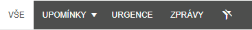
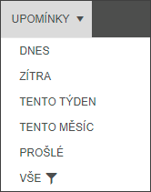
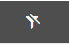

Zobrazení záznamů
Připomínky, Urgence a Zprávy (zde dále záznamy) jsou uživateli předkládány v seznamu, ve kterém lze řadit a filtrovat podle jednotlivých sloupců.

Pro zrychlení výběru je možné si vytřídit jednotlivé záznamy pomocí rychlých filtrů (tlačítek).

Upomínky je možné ještě třídit a filtrovat dle datumů, proto mají rozklikávací menu, kde se dá filtr ještě detailněji specifikovat.

Ikonka trychtýře ukazuje, který filtr je vybrán.

Kliknutím na ikonku přeškrtnutého trychtýře budou zobrazeny všech záznamy bez nastaveného filtru.